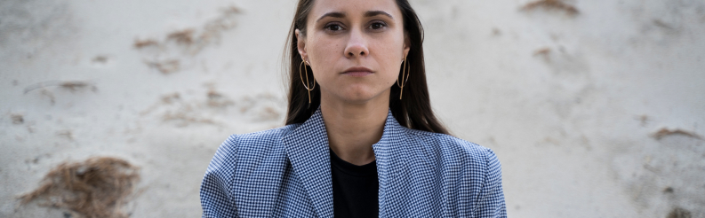
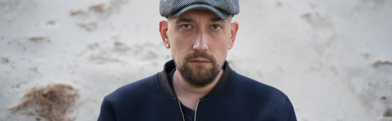

<section class="about">
  <div class="wrapper">
    <div class="about__inner">
      <ul class="breadcrumbs">
        <li class="breadcrumbs__item">Main</li>
        <li class="breadcrumbs__item">/</li>
        <li class="breadcrumbs__item">About</li>
      </ul>
      <h1 class="about__title">
        <span>About</span><span>us</span>
      </h1>
      <div class="about__founded">
        <h2 class="about__founded-title">
          <span class="accent-color">Kononenko ID Studio</span>
          was founded in Ukraine in 2012 by
        </h2>
        <ul class="about__list">
          <li class="about__item">
            
            <h3 class="about__name">Julia Kononenko</h3>
          </li>
          <li class="about__item">
            
            <h3 class="about__name">Artem Kravchenko</h3>
          </li>
        </ul>
      </div>
      <div class="about__info">
        <ul class="benefits__list">
          <li class="benefits__item">
            <h4 class="benefits__title">Our mission</h4>
            <p>Is to create mass-attractive design objects accessible to the middle class, inspiring consumer confidence
            </p>
          </li>
          <li class="benefits__item">
            <h4 class="benefits__title">Our style</h4>
            <p>Is a fusion, a mix of diverse elements
            </p>
          </li>
          <li class="benefits__item">
            <h4 class="benefits__title">The studio currently operates in five areas</h4>
            <p>Product design / Furniture design / Lighting design / Illustrations / Interior design
            </p>
          </li>
        </ul>
        <div class="slogan">
          <h4 class="slogan__title">Our ideology and slogan</h4>
          <p>"The art of transforming ideas into form!", guide our work. In our projects, we aim to invest our unique
            vision, predict
            trends, and focus on the general direction of design. We strive to create not only aesthetically attractive,
            modern, and
            beautiful objects but also affordable ones.</p>
          <p>Our roots and consciousness, combined with our experience, make it challenging to fit into any clearly
            defined design
            direction. Therefore, we emphasize that we create our own unique things that embody our philosophy of the
            world.</p>
          <p>In our creative process, we seek optimal solutions, carefully considering every detail, and not relying on
            external
            references. We ask ourselves questions such as "What if?" or "How can we make it utilitarian and
            multifunctional?" We
            prioritize the end-user, the person who will live with our design and interact with it, over recognition
            among
            colleagues.</p>
        </div>
        <div class="follow">
          <h4 class="follow__title">follow us</h4>
          <ul class="follow__list">
            <li class="follow__item">
              <a href="#">Instagram</a>
            </li>
            <li class="follow__item">
              <a href="#">Linkedin</a>
            </li>
            <li class="follow__item">
              <a href="#">Facebook</a>
            </li>
          </ul>
        </div>
      </div>
    </div>
  </div>
</section>